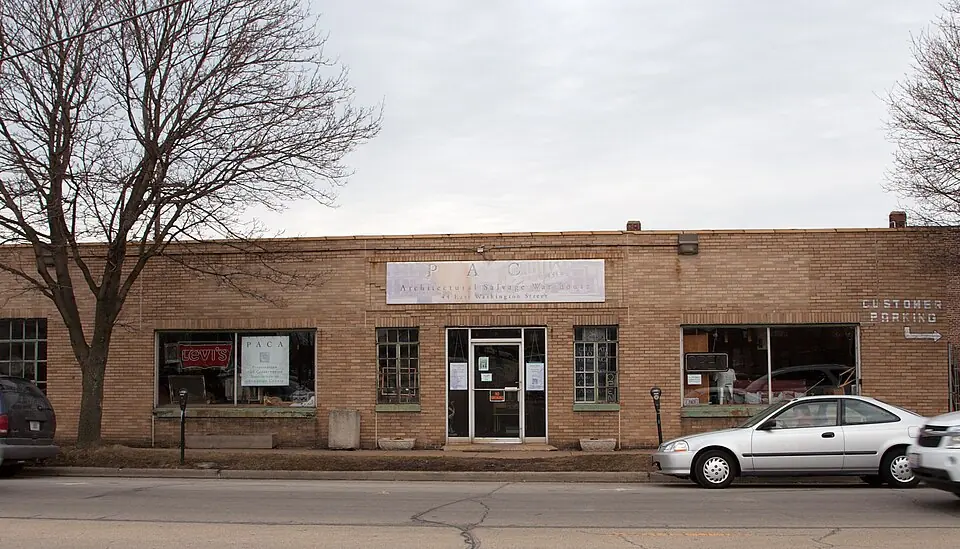

Dispositif expérimental
Économie circulaire et revitalisation
Banque de Matériaux TVF
Un dispositif territorial pour identifier, qualifier et orienter les ressources inutilisées vers des projets utiles aux habitants, aux associations et aux territoires.

Notre positionnement
Donner une destination territoriale aux ressources encore utiles
La Banque de Matériaux TVF n’est pas une plateforme de distribution gratuite. Elle constitue un outil de valorisation territoriale : chaque ressource proposée est examinée au regard de son état, de sa traçabilité, des contraintes de retrait et surtout de son utilité pour un projet identifié.
Le dispositif relie des ressources dormantes à des besoins concrets : réhabilitation d’un local associatif, aménagement d’un espace de proximité, chantier solidaire, remise en usage d’un bien vacant ou équipement d’une activité locale. TVF qualifié les projets et décide de l’affectation des ressources selon leur utilité territoriale, leur sécurité et les conventions applicables. Un don ne crée aucun droit à une distribution libre ou automatique.
Pourquoi agir
Des ressources disponibles, mais des filières encore fragmentées
Le gaspillage ne résulte pas seulement d’un manque de volonté. Il vient aussi d’un défaut d’inventaire, de temps, de stockage, de qualification technique et de coordination entre les acteurs.
Gaspillage de ressources
Des portes, menuiseries, sanitaires, luminaires, outils ou mobiliers peuvent perdre toute valeur d’usage faute d’être repérés avant un chantier, un déménagement ou une fermeture.
Poids des déchets du BTP
La construction concentre l’essentiel des déchets minéraux produits en France. Recycler est utile, mais préserver l’objet ou le matériau avant qu’il devienne un déchet conserve davantage de valeur.
Coût des approvisionnements
La hausse et la volatilité des prix fragilisent les petits projets. Le réemploi local peut compléter l’achat neuf lorsque les dimensions, l’état et le calendrier sont compatibles.
Patrimoine vacant
La remise en usage d’un logement, d’un commerce ou d’un local suppose souvent des travaux que les propriétaires ou porteurs de projet ne peuvent financer seuls.
Associations sous contraintes
Les structures locales ont besoin de mobilier, d’outillage et d’équipements, mais disposent rarement du temps, des compétences logistiques ou des budgets nécessaires pour organiser seules le réemploi.
Projets publics à arbitrer
Les collectivités doivent concilier entretien du patrimoine, services à la population et sobriété budgétaire. Une ressource inutilisée peut devenir un levier pour un projet local encadré.
Sources : SDES, Bilan 2020 de la production de déchets en France ; Ministère de la Transition écologique, filière PMCB. Ces chiffres décrivent le contexte national et non les résultats de TVF.
Qui peut contribuer
Quatre portes d’entrée, une même exigence de traçabilité
La contribution peut porter sur un bien, du mobilier, des matériaux, un équipement ou des compétences. Elle fait toujours l’objet d’une qualification avant toute orientation.
Collectivités
Communes et intercommunalités peuvent signaler ou mettre à disposition des ressources publiques devenues sans usage immédiat.
- matériaux et mobilier
- bâtiments ou locaux vacants
- terrains et espaces inutilisés
- équipements publics
Entreprises
Les entreprises peuvent anticiper la seconde vie de ressources issues d’un chantier, d’un renouvellement d’équipement ou d’un changement d’activité.
- surplus et invendus
- matériaux de chantier
- mobilier professionnel
- équipements techniques
Associations
Une association peut proposer du matériel, partager des compétences ou rejoindre la mobilisation autour d’un projet territorial.
- matériels et équipements
- compétences techniques
- bénévolat de terrain
- connaissance des besoins locaux
Particuliers
Chaque citoyen peut contribuer à la revitalisation de son territoire en signalant des objets ou matériaux encore utilisables, sans garantie d’acceptation automatique.
- meubles, outils et luminaires
- portes, fenêtres et quincaillerie
- matériaux de bricolage et peintures identifiées
- équipements réutilisables
Fonctionnement
De la ressource inutilisée au projet territorial
Le parcours est conçu pour éviter les annonces imprécises, les stocks fictifs et les déplacements inutiles. Chaque étape produit une information utile à la suivante.
Identification
Le contributeur décrit la ressource, son propriétaire, sa localisation, sa quantité et sa date de disponibilité.
Diagnostic
TVF vérifie les informations, les photos, les dimensions, les conditions de dépose et les contraintes d’accès.
Évaluation
L’état, la sécurité, la valeur d’usage, les besoins logistiques et les éventuels coûts sont appréciés.
Valorisation
La solution adaptée est recherchée : réemploi direct, réparation, stockage temporaire, transformation ou orientation vers une filière compétente.
Affectation
La ressource est reliée à un projet qualifié, avec accord des parties et calendrier de retrait ou de mise à disposition.
Suivi et impact
Le devenir de la ressource est documenté : usage final, territoire bénéficiaire, quantité mobilisée et preuves disponibles.
Ressources confiéesProjet qualifiéConvention de valorisationBénéfices partagés
Coopération territoriale
Une convention pour maintenir la valeur sur le territoire
Lorsqu’une collectivité contribue, une convention de valorisation peut préciser la destination des ressources, les responsabilités, la durée, le suivi et les usages rendus possibles. L’objectif est que les ressources confiées continuent à bénéficier au territoire.
- utilisation ponctuelle d’espaces rénovés
- organisation d’activités pour les habitants
- accueil d’associations et de services de proximité
- actions éducatives, animations culturelles et ateliers
- engagement réciproque sur le suivi du projet
Propriétaires
Relier les matériaux au programme Bien Solidaire à Usage Partagé
Un propriétaire peut conserver la pleine propriété de son bien tout en recherchant, avec TVF, une solution de rénovation et d’usage temporaire encadrée par convention. Les matériaux de réemploi peuvent contribuer à la faisabilité du projet sans se substituer aux diagnostics, aux assurances et aux règles techniques.
Découvrir le programme- conservation de la propriété
- diagnostic et projet de rénovation
- convention d’utilisation définie dans le temps
- valorisation du patrimoine
- service ou activité utile au territoire
Entreprises et RSE
Transformer une contrainte de fin d’usage en engagement territorial
TVF propose un cadre de coopération pour documenter les ressources, identifier les usages possibles et rendre compte de leur destination réelle.
Repérer les ressources avant qu’elles ne soient mélangées ou évacuées augmente les possibilités de réemploi.
Le dispositif favorise des boucles locales et recherche l’usage le plus pertinent avant le recyclage.
Les ressources peuvent soutenir un projet associatif, un local de proximité ou une réhabilitation utile au bassin de vie.
La valorisation publique reste proportionnée, factuelle et conditionnée à un projet effectivement réalisé et documenté.
Cadre d’intervention
Ce que TVF ne fait pas
La clarté du dispositif protège les contributeurs, les bénéficiaires et l’association. Une proposition peut être refusée si elle est dangereuse, non traçable, inutilisable ou sans destination réaliste.
TVF n’est pas une déchetterieTVF n’est pas une plateforme de dons libresTVF n’est pas un site de revente classiqueTVF n’est pas un système de distribution automatique
Impacts recherchés
Mesurer ce que la ressource rend possible
TVF ne publiera que des résultats issus de projets validés et documentés. En phase de lancement, ces objectifs constituent un cadre de mesure, pas un bilan déjà acquis.
Centres-villes revitalisés
Contribuer à la remise en usage de locaux, commerces et logements qui structurent la vie quotidienne.
Déchets évités
Suivre les quantités effectivement réemployées, avec unités, preuves d’affectation et destination finale.
Bâtiments réhabilités
Mobiliser le réemploi comme l’un des leviers d’une rénovation techniquement et financièrement cohérente.
Associations soutenues
Faciliter l’accès à des équipements utiles dans le cadre d’un projet accompagné et d’un besoin vérifié.
Activités et emplois
Faire émerger des besoins de collecte, diagnostic, dépose, réparation, logistique, médiation et aménagement.
Cadre de vie amélioré
Orienter les ressources vers des services, espaces et usages visibles qui répondent aux besoins locaux.
Proposer une ressource
Transmettre une proposition pour qualification
La transmission du formulaire ne vaut ni acceptation, ni collecte, ni affectation. TVF examine la ressource et peut demander des informations complémentaires avant toute décision.
Construire le premier réseau national de valorisation territoriale des ressources inutilisées
TVF souhaite relier progressivement les territoires, les antennes locales, les contributeurs et les porteurs de projet autour d’une méthode commune : identifier, qualifier, conventionner, affecter et mesurer. Cette ambition suppose des outils numériques, mais surtout une capacité d’animation locale et une gouvernance transparente.
« Aucune ressource encore utile ne devrait être détruite lorsqu’elle peut contribuer à redonner vie à un territoire. »
FAQ de la Banque de Matériaux TVF
Les matériaux sont-ils distribués gratuitement ?
Non. La Banque de Matériaux TVF n’est pas un service de libre distribution. Les conditions de mobilisation dépendent de la ressource, de son propriétaire, de la logistique, du projet d’affectation et de la convention applicable.
Une proposition est-elle automatiquement acceptée ?
Non. TVF vérifie notamment l’état, la traçabilité, la sécurité, la quantité, les conditions de retrait et l’existence d’un usage réaliste. Les déchets dangereux ou ressources sans filière adaptée sont refusés ou réorientés.
Qui reste propriétaire avant l’affectation ?
La propriété et les responsabilités sont précisées au cas par cas. Une publication ou un signalement ne vaut pas transfert de propriété. Aucun retrait ne doit intervenir sans accord formalisé.
TVF organise-t-elle le transport et le stockage ?
Pas systématiquement. Le diagnostic détermine qui assure la dépose, le chargement, le transport et, si nécessaire, le stockage temporaire. Ces conditions doivent être connues avant l’affectation.
Quels matériaux peuvent être proposés par un particulier ?
Mobilier, outils, luminaires, portes, fenêtres, quincaillerie, matériaux de bricolage identifiés ou autres équipements réutilisables peuvent être signalés. Des photos, dimensions, quantités et informations d’état sont demandées.
Comment une collectivité peut-elle participer ?
Elle peut signaler des ressources ou biens inutilisés, proposer un projet territorial et construire avec TVF une convention de valorisation précisant les usages, responsabilités, bénéfices partagés et modalités de suivi.
Comment l’impact sera-t-il calculé ?
Les indicateurs reposeront sur des données validées : quantités réemployées, ressources affectées, projets servis, territoires concernés et preuves de destination. Aucun chiffre ne sera publié avant vérification.
Quelle différence entre réemploi, réutilisation et recyclage ?
Le réemploi maintient un produit dans son usage sans qu’il devienne un déchet. La réutilisation concerne un produit devenu déchet puis préparé pour un nouvel usage. Le recyclage transforme la matière. TVF recherche prioritairement la conservation de la valeur d’usage lorsque cela est possible et sûr.
La Banque de Matériaux TVF n'est pas une distribution libre
Les ressources proposées sont qualifiées puis affectées à des projets validés par TVF. Cette approche évite les collectes inutiles, les promesses impossibles et les usages incompatibles avec la sécurité ou l'intérêt territorial.
Voir les limites d'intervention
FAQ
Questions fréquentes sur les matériaux
Banque de Materiaux TVF précise les conditions de qualification, de traçabilité et d'affectation des ressources réemployables.
Les matériaux sont-ils distribués librement ?
Non. Dans Banque de Materiaux TVF, les ressources sont qualifiées, tracées puis affectées à des projets validés selon leur état, leur utilité et les contraintes logistiques.
Qui peut proposer une ressource ?
Pour Banque de Materiaux TVF, collectivités, entreprises, associations et particuliers peuvent proposer des matériaux, du mobilier, des équipements ou des surplus réutilisables.
Que regarde TVF avant acceptation ?
Pour Banque de Materiaux TVF, les points clés sont l'origine, la quantité, l'état, le retrait, le stockage, l'assurance, la destination possible et la traçabilité.